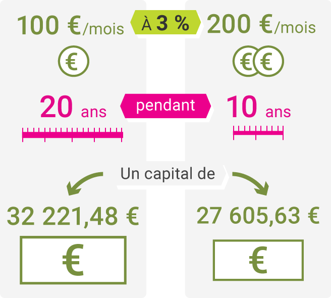

Cette vidéo est hébergée en ligne, assurez vous d'être connecté à internet pour pouvoir la visionner.
RetourLe paiement des retraites est assuré par les cotisations retraite. Celles-ci sont calculées sur la rémunération brute de chaque salarié et acquittées chaque mois par le salarié et par l'entreprise.
Le salarié voit prélever la cotisation pour le régime de base. Il s’agit en réalité de deux cotisations obligatoires calculées sur le salaire.
Chaque mois, sont aussi prélevées des cotisations pour la retraite complémentaire Arrco (concerne les cadres et les employés) et éventuellement pour la retraite complémentaire Agirc (ne concerne que les cadres)
Pour bénéficier d’une retraite à taux plein (maximum = 50 % du salaire annuel moyen des 25 meilleures années, limité au plafond Sécurité Sociale), vous devez atteindre votre âge légal de départ à la retraite et avoir le nombre de trimestre nécessaire. Lorsque vous réunissez ces deux conditions, votre retraite est calculée à taux plein, c’est-à-dire aux conditions les plus favorables.
Le nombre de trimestres nécessaire pour obtenir une retraite à taux plein dépend de votre année de naissance. Il est de 172 trimestres pour les assurés nés à partir de 1973. Il varie entre 160 et 171 trimestres pour les assurés nés avant 1973.
À partir d’un certain âge, la retraite est calculée à taux plein de façon automatique, quel que soit le nombre de vos trimestres. Cet âge varie entre 65 et 67 ans, selon votre date de naissance.
Les salariés qui prolongent leur activité au-delà de l'âge légal alors qu'ils ont atteint la durée de cotisation requise pour le taux plein, bénéficient d'une surcote appliquée à leur retraite du régime général. La surcote est de 1.25% par trimestre à compter du 1er janvier 2009.
Le montant de la pension de retraite de base est augmenté d'une bonification de 10% pour tout assuré, homme ou femme, qui a eu ou élevé au moins trois enfants pendant 9 ans avant leur 16ème anniversaire.
Vous débutez votre vie professionnelle ? Quelques conseils.
Assurez-vous d’avoir été correctement déclaré par votre employeur.
En cas de doute, adressez une demande à l’URSSAF pour savoir si votre employeur
a correctement accompli la déclaration préalable à l’embauche (DPAE) vous concernant.
Bulletins de paie, contrats de travail... : il est important de conserver tous vos justificatifs.
IMPORTANT conservez également :
Dès le début de votre carrière, votre employeur transmet des informations à votre caisse de retraite lui permettant ainsi de retracer toute votre carrière.
Pour visualiser l’ensemble de votre carrière et vos droits acquis pour la retraite, vous pouvez consulter votre relevé de carrière directement en ligne sur internet, sur le site de l’assurance retraite. Cet accès est gratuit et peut se faire quel que soit votre âge. .
Les effets de la durée d’épargne sur la capitalisation.
Le montant des versements est identique mais le capital acquis est supérieur quand on épargne sur du plus long terme, avec un effort d’épargne moins important.
D’où la nécessité de mettre en place une solution d’épargne le plus tôt possible.
Pourquoi associe-t-on souvent assurance-vie et retraite ?
Parce que l'assurance-vie permet de se constituer un complément de retraite sous forme de revenus réguliers ou de rente viagère.
Qu'est-ce que l'assurance vie ?
L'assurance-vie est un contrat d'épargne et d'assurance. Il est mis en place exclusivement par des assureurs, même s'il peut être distribué par des banques et des associations.
Son principe est simple :
Le plan épargne retraite populaire (Le PERP), ouvert à tous les épargnants, est destiné spécifiquement à la constitution d'un complément de revenus pour la retraite.
Le titulaire du PERP ne peut pas récupérer son capital avant la retraite, sauf dans certains cas précis.
Le PEA est un produit essentiellement boursier accessible à tous. Il donne droit à une rente viagère exonérée d'impôt
Le plan d'épargne d'entreprise (PEE) et le plan d'épargne retraite collectif (PERCO) permettent d'épargner au sein de l'entreprise en vue de la retraite. Réaliser un investissement immobilier permet de bénéficier, à l'âge de la retraite, d'un revenu complémentaire régulier ou d'un capital.
Détenir un ou plusieurs livrets d'épargne permet de mettre de côté des sommes disponibles à tout moment afin de ne pas avoir à effectuer de prélèvements sur des produits d'épargne dédiés à la retraite, qui doivent s'envisager sur le long terme.
Compte épargne temps (CET)
Il permet aux salariés qui le souhaitent, de :
C’est la première démarche à effectuer lorsque l’on commence à envisager sa retraite. Le relevé de situation individuelle vous permettra de faire un point précis sur votre situation.
À 35 ans, puis tous les cinq ans, dans le cadre du droit à l’information retraite, vous recevez un relevé de situation individuelle. Il résume les droits que vous avez obtenus dans l’ensemble de vos régimes de retraite obligatoires de base et complémentaire.
Ce relevé retrace les informations enregistrées par chaque organisme, par exemple :
Il est souhaitable de demander ce relevé entre dix-huit et vingt-quatre mois avant la date à laquelle vous envisagez de prendre votre retraite.
Prenez le temps de bien vérifier votre relevé de situation individuelle.
Cette démarche est indispensable. Plus vous avez connu une carrière variée, plus il est prudent d’engager suffisamment tôt la démarche de préparation de la retraite. Cela vous permet de signaler aux organismes concernés les anomalies ou oublis et de procéder aux démarches nécessaires pour régulariser la situation.
Comment faire si je ne retrouve pas mes bulletins de salaires ?
Plusieurs solutions s’offrent à vous. Votre caisse de retraite peut, par exemple, vérifier les revenus déclarés par vos employeurs par le biais de la déclaration annuelle des données sociales. Si votre employeur existe toujours, vous pouvez également le contacter. Il peut avoir conservé un double ou un enregistrement informatique de vos bulletins. Il pourra également vous délivrer une attestation mentionnant le montant de vos rémunérations pour les périodes manquantes ou erronées.
À partir de 45 ans vous pouvez solliciter auprès de votre régime de retraite de base et/ou de votre régime de retraite complémentaire un entretien d’information gratuit. Une information générale et individualisée ainsi qu’une simulation du montant de votre retraite vous seront délivrées.
Vous recevez tous les 5 ans, depuis l’âge de 35 ans, votre relevé de carrière tous régimes.
L'Assurance retraite met à votre disposition les relevés qui vous permettent de vérifier que l'ensemble de votre carrière professionnelle a bien été pris en compte. Consultez votre relevé de carrière tous régimes qui récapitule votre carrière et les droits que vous avez acquis dans tous vos régimes de retraite, obligatoires de base et complémentaires. Vous pouvez également consulter votre relevé de carrière du régime général.
Chaque année, votre carrière est alimentée par l'Assurance retraite au cours du premier semestre.
Vous pouvez accéder au site de l'assurance retraite.
Les effets de la durée d’épargne sur la capitalisation.
Le montant des versements est identique mais le capital acquis est supérieur quand on épargne sur du plus long terme, avec un effort d’épargne moins important.
D’où la nécessité de mettre en place une solution d’épargne le plus tôt possible.
Pourquoi associe-t-on souvent assurance-vie et retraite ?
Parce que l'assurance-vie permet de se constituer un complément de retraite sous forme de revenus réguliers ou de rente viagère.
Qu'est-ce que l'assurance vie ?
L'assurance-vie est un contrat d'épargne et d'assurance. Il est mis en place exclusivement par des assureurs, même s'il peut être distribué par des banques et des associations.
Son principe est simple :
Le plan épargne retraite populaire (Le PERP), ouvert à tous les épargnants, est destiné spécifiquement à la constitution d'un complément de revenus pour la retraite.
Le titulaire du PERP ne peut pas récupérer son capital avant la retraite, sauf dans certains cas précis.
Le PEA est un produit essentiellement boursier accessible à tous. Il donne droit à une rente viagère exonérée d'impôt
Le plan d'épargne d'entreprise (PEE) et le plan d'épargne retraite collectif (PERCO) permettent d'épargner au sein de l'entreprise en vue de la retraite. Réaliser un investissement immobilier permet de bénéficier, à l'âge de la retraite, d'un revenu complémentaire régulier ou d'un capital.
Détenir un ou plusieurs livrets d'épargne permet de mettre de côté des sommes disponibles à tout moment afin de ne pas avoir à effectuer de prélèvements sur des produits d'épargne dédiés à la retraite, qui doivent s'envisager sur le long terme.
Compte épargne temps (CET)
Il permet aux salariés qui le souhaitent, de :
Les travailleurs handicapés peuvent bénéficier d’une pension au taux plein de 50 % avant l’âge légal de départ à la retraite à condition qu’ils :
Pour les périodes antérieures au 1er Janvier 2016, la reconnaissance de la qualité de travailleur handicapé peut continuer d’être prise en compte pour l’appréciation des conditions permettant de bénéficier de la retraite anticipée.
Sont pris compte dans la durée d’assurance : tous les trimestres validés dans le régime général (et, le cas échéant, dans un ou plusieurs autres régimes obligatoires) au titre de périodes travaillées, de périodes reconnues équivalentes, de périodes assimilées (par exemple : arrêt maladie, congé de maternité, chômage indemnisé etc.) ou de droit à majoration de durée d’assurance (par exemple : majoration maximale de 8 trimestres par enfant).
La durée d’assurance cotisée est plus restrictive : toutes les périodes de cotisations à un régime de base français sont retenues, à l’exception des périodes d’affiliation à l’assurance vieillesse des parents au foyer et des périodes de volontariat associatif.
Le travailleur handicapé doit adresser sa demande de retraite anticipée auprès de la Caisse de retraite de son dernier régime d’affiliation.
Le demandeur doit solliciter auprès de sa Caisse de retraite l’imprimé de "demande de situation vis-à-vis de la retraite avant 60 ans" ; ce document doit être rempli puis retourné à la Caisse qui pourra ainsi vérifier s’il remplit toutes les conditions pour bénéficier de ce droit.
Si l’assuré remplit les conditions exigées, sa caisse de retraite lui délivrera un justificatif de sa situation vis-à-vis de la retraite anticipée. Elle joindra à cet envoi l’imprimé de demande de retraite spécifique aux personnes handicapées et un calcul estimatif de la pension à laquelle il peut prétendre.
Les travailleurs handicapés, peuvent obtenir le versement de leur retraite complémentaire sans abattement.
La pension liquidée au titre de la retraite anticipée pour travailleur handicapé peut être complétée par la majoration pour enfants, ou par l’allocation supplémentaire d’invalidité.
Dès lors que vous avez acquis une année d'ancienneté, la MAIF verse pour vous, chaque mois et tout au long de votre présence dans l'entreprise, une cotisation correspondant à 1 % de votre salaire mensuel brut. Ces cotisations alimentent un fonds de pension dont la gestion a été confiée au BCAC.
Ainsi, lorsque vous cesserez votre activité professionnelle et ferez valoir vos droits à la retraite, vous percevrez un supplément de retraite sous forme d’une rente viagère.
Il concerne les salariés dont le contrat de de travail est antérieur au 31/12/1995.
Mis en place en 1972, le R.R.P. est un régime à prestations définies qui détermine au profit de l'ensemble des salariés de l'assurance, cadres et non cadres, une retraite globale.
Il appartient au salarié qui souhaite partir en retraite de formuler par écrit une demande de cessation d'activité professionnelle, conformément aux dispositions de la Convention d'Entreprise.
La demande est adressée au responsable hiérarchique qui la transmet à l'Administration des Ressources Humaines.
Un délai de préavis (avant date de départ en congés) est à respecter :
Afin de faciliter les démarches, il est conseillé au salarié de se rapprocher du Service Administration des Ressources Humaines au moins 5 mois avant la date de retraite souhaitée.
L'Administration des Ressources Humaines remet au salarié une note explicative sur les délais et formalités à accomplir ainsi que tous les dossiers nécessaires à la demande de liquidation auprès des organismes.
Lorsque vous demanderez à faire valoir vos droits à la retraite, votre contrat de travail prendra fin et vous cesserez toute activité professionnelle au sein de l'entreprise. Un solde de tout compte vous sera fourni et si vous totalisez plus de 10 ans de présence dans l'entreprise, il sera assorti du versement d'une l'indemnité de cessation de contrat, calculée selon le principe suivant (valeur brute).
L’indemnité de départ : 10 % du salaire mensuel moyen des 12 derniers mois x nombre d’années de présence (au prorata du temps de travail) dans l’entreprise.
Cette indemnité, versée en une seule fois avec votre dernier mois de salaire, est totalement imposable et peut être, selon la législation en vigueur à ce jour, répartie sur 4 exercices fiscaux.
Un courrier mentionnant les nets fiscaux sera adressé au moment de la déclaration fiscale.
Environ 5 mois avant la date de retraite la MAIF transmettra :
2 à 3 mois avant la date de retraite la MAIF adressera :
Il permettra de connaître précisément :
Elle vise notamment à expliquer le fonctionnement du régime général, des régimes complémentaires et à préparer les salariés à la cessation d'activité.
Le futur retraité peut conserver le bénéfice de la complémentaire MGEN FILIA. Toutefois la part qui était prise en charge par la MAIF sera désormais intégralement à la charge du retraité. Le conjoint peut également continuer à bénéficier de la souscription de MGEN FILIA sous réserve de s’acquitter lui aussi de la totalité de la cotisation.
Instituée par le législateur, il faut avoir travaillé au moins 10 ans dans l’entreprise pour en bénéficier. Elle est versée avec le solde de tout compte et est totalement imposable. Toutefois, sous conditions vues avec le fisc, il est possible d’en étaler le versement sur 4 ans.
Le montant qui est « connu » le jour du départ à la retraite peut être débloqué et n’est pas imposable. La part « inconnue » le jour du départ sera déblocable le jour où le montant est communiqué par l’entreprise mais sera imposable sauf si elle n’est débloquée qu’au bout du délai légal des 5 ans.
C’est le même fonctionnement que la participation, il est possible de débloquer la part connue sans imposition au moment du départ à la retraite. La part encore non connue sera déblocable quand l’entreprise aura communiqué sur le montant et sera soumise à imposition pendant le délai légal des 5 ans.
B2V auprès de qui le contrat est souscrit prend contact directement avec le salarié retraité. Soit le retraité résilié le contrat, soit il continue à en bénéficier jusque l’âge de 80 ans. La cotisation est alors calculée sur la base du dernier salaire déclaré et de l’âge.
A savoir : l’assurance invalidité cesse à l’âge de 60 ans sans modification de cotisation
Le retraité ne peut plus bénéficier du CE « classique ». Toutefois il existe désormais Le Comité de coordination des retraités du groupe MAIF (CCR MAIF), association loi 1901 créée en 1983. C’est une initiative d'un petit groupe de collègues qui entendaient maintenir entre eux des liens de solidarité et d'amitié et promouvoir des activités culturelles de sport ou de loisir. Il compte aujourd'hui plus de 600 adhérents.
A savoir : l’assurance invalidité cesse à l’âge de 60 ans sans modification de cotisation
Le blog du CCR MAIF annonce et rend compte des diverses activités organisées.
ATTENTION : il n’y a plus de CESU pour le retraité et ceux non utilisés après le départ à la retraite ne sont pas échangeables.
Retraite progressive d'un salarié du privé (régime général). Mise à jour le 26/02/2015 - Direction de l'information légale et administrative (Premier ministre).
La retraite progressive permet de percevoir une fraction de la pension de retraite de base versée par le régime général de la sécurité sociale tout en exerçant une activité à temps partiel.
Vous pouvez bénéficier de la retraite progressive versée par la sécurité sociale si vous remplissez toutes les conditions suivantes :
Pour justifier de votre droit au bénéfice de la retraite progressive, vous devez adresser votre demande à votre caisse de retraite. Vous devez joindre à cette demande tous les éléments suivants :
Le bénéfice de la retraite progressive est ouvert tant que vous remplissez les conditions y ouvrant droit.
Durant la retraite progressive, vous percevrez une fraction du montant déterminé par votre caisse de retraite. Cette fraction est déterminée en calculant la différence entre 100 % et votre durée de travail par rapport à la durée de travail à temps plein applicable à l'entreprise.
La décote calculée ne doit pas dépasser 30 %.
Par exemple, si votre durée de travail est de 60 % par rapport au temps plein, vous percevez 40 % du montant de la pension de retraite calculée par votre caisse de retraite.
Lorsque vous demandez la liquidation définitive de votre pension de retraite, le versement de la fraction de pension est remplacé par le versement de la pension complète. Votre pension de retraite est recalculée.
Le versement de cette fraction de pension s'arrête dans les cas suivants :
Il n'est alors plus possible de bénéficier à nouveau de la retraite progressive, sauf :
C’est la première démarche à effectuer lorsque l’on commence à envisager sa retraite. Le relevé de situation individuelle vous permettra de faire un point précis sur votre situation.
À 35 ans, puis tous les cinq ans, dans le cadre du droit à l’information retraite, vous recevez un relevé de situation individuelle. Il résume les droits que vous avez obtenus dans l’ensemble de vos régimes de retraite obligatoires de base et complémentaire.
Ce relevé retrace les informations enregistrées par chaque organisme, par exemple :
Il est souhaitable de demander ce relevé entre dix-huit et vingt-quatre mois avant la date à laquelle vous envisagez de prendre votre retraite.
Prenez le temps de bien vérifier votre relevé de situation individuelle.
Cette démarche est indispensable. Plus vous avez connu une carrière variée, plus il est prudent d’engager suffisamment tôt la démarche de préparation de la retraite. Cela vous permet de signaler aux organismes concernés les anomalies ou oublis et de procéder aux démarches nécessaires pour régulariser la situation.
Comment faire si je ne retrouve pas mes bulletins de salaires ?
Plusieurs solutions s’offrent à vous. Votre caisse de retraite peut, par exemple, vérifier les revenus déclarés par vos employeurs par le biais de la déclaration annuelle des données sociales. Si votre employeur existe toujours, vous pouvez également le contacter. Il peut avoir conservé un double ou un enregistrement informatique de vos bulletins. Il pourra également vous délivrer une attestation mentionnant le montant de vos rémunérations pour les périodes manquantes ou erronées.
À 55 ans, puis à 60 ans, et au-delà pour les assurés de plus de 60 ans n’ayant pas encore pris leur retraite, vous recevez une estimation indicative globale.
Les travailleurs handicapés peuvent bénéficier d’une pension au taux plein de 50 % avant l’âge légal de départ à la retraite à condition qu’ils :
Pour les périodes antérieures au 1er Janvier 2016, la reconnaissance de la qualité de travailleur handicapé peut continuer d’être prise en compte pour l’appréciation des conditions permettant de bénéficier de la retraite anticipée.
Sont pris compte dans la durée d’assurance : tous les trimestres validés dans le régime général (et, le cas échéant, dans un ou plusieurs autres régimes obligatoires) au titre de périodes travaillées, de périodes reconnues équivalentes, de périodes assimilées (par exemple : arrêt maladie, congé de maternité, chômage indemnisé etc.) ou de droit à majoration de durée d’assurance (par exemple : majoration maximale de 8 trimestres par enfant).
La durée d’assurance cotisée est plus restrictive : toutes les périodes de cotisations à un régime de base français sont retenues, à l’exception des périodes d’affiliation à l’assurance vieillesse des parents au foyer et des périodes de volontariat associatif.
Le travailleur handicapé doit adresser sa demande de retraite anticipée auprès de la Caisse de retraite de son dernier régime d’affiliation.
Le demandeur doit solliciter auprès de sa Caisse de retraite l’imprimé de "demande de situation vis-à-vis de la retraite avant 60 ans" ; ce document doit être rempli puis retourné à la Caisse qui pourra ainsi vérifier s’il remplit toutes les conditions pour bénéficier de ce droit.
Si l’assuré remplit les conditions exigées, sa caisse de retraite lui délivrera un justificatif de sa situation vis-à-vis de la retraite anticipée. Elle joindra à cet envoi l’imprimé de demande de retraite spécifique aux personnes handicapées et un calcul estimatif de la pension à laquelle il peut prétendre.
Les travailleurs handicapés, peuvent obtenir le versement de leur retraite complémentaire sans abattement.
La pension liquidée au titre de la retraite anticipée pour travailleur handicapé peut être complétée par la majoration pour enfants, ou par l’allocation supplémentaire d’invalidité.
Bien vieillir c’est déjà faire attention à son alimentation.
Les risques au moment de la retraite :
Les conseils :
Bien vieillir c’est aussi faire attention à son activité physique. Quelques repères ?
Intensité faible - 45 min. : marche lente, bricolage, entretien, mécanique, arrosage du jardin, pétanque, billard, bowling, tennis de table, yoga, tai-chi-chuan, danse de salon…
Intensité modérée - 30 min. : marche rapide, marche nordique, jardinage léger, ramassage de feuilles, aérobic, danse (rock, disco…), vélo ou natation "plaisir", aquagym, frisbee, badminton, golf…
Intensité élevée - 20 min. : marche avec dénivelés, randonnée en moyenne montagne, bêchage, jogging, VTT, natation rapide, tennis, squash…
Pensez à consulter votre médecin traitant avant de débuter une activité d’intensité élevée.
Quelles pertes je vais subir en partant à la retraite :
Mais aussi quels sont les gains en partant à la retraite :
Bien vieillir et partir à la retraite cela peut être l’occasion de concrétiser un projet de vie mais c’est aussi l’occasion de se poser pour se poser des questions.
Le changement de domicile ? Comment gérer la transition quand l’un est à la retraite et pas l’autre ? Il va falloir réapprendre à vivre ensemble ? Comment gérer un enfant adulte encore à la maison ? Mettre en place un tutorat en fin de carrière pour transmettre ce que l’on sait ?
La retraite c’est passer d’une identité attribuée de l’extérieur (l’emploi notamment) à une identité assumée en son nom propre.
Cette identité va passer par une période de transition durant laquelle il faut décélérer : cela peut être des vacances pour se reposer, se poser et se centrer sur soi.
Dans un premier temps, il peut être conseillé de ne pas prendre d’engagement qui ne sont pas forcément en accord avec les besoins de la personne
Viendra ensuite la restructuration de la personne.
Prendre le temps de faire ses choix et prendre ses décisions. La personne va explorer de nouvelles choses, gérer son temps en fonction de ses besoins. Afin de ne pas subir le temps ni se laisser guider par les autres, il faut s’organiser.
Les gros cailloux de la vie (illustration de comment bien gérer son temps)
Montrer un seau remplit avec 12 gros cailloux.
Le seau est-il plein ? oui…/ non car il est plein d’air.
Le remplir ensuite avec des graviers et reposer la question.
Le remplir ensuite avec du sable et reposer la question.
Le remplir ensuite avec de l’eau et reposer la question.
Morale de l’histoire : il y a toujours de la place pour les petites choses quand les gros cailloux ont été posés. Les cailloux sont les priorités, le reste ce sont les petites choses. Si les priorités ne sont pas posées dès le début, on est débordé de petites choses mais les priorités qui structurent ne seront pas posées.
Les effets de la durée d’épargne sur la capitalisation.
Le montant des versements est identique mais le capital acquis est supérieur quand on épargne sur du plus long terme,
avec un effort d’épargne moins important.
D’où la nécessité de mettre en place une solution d’épargne le plus tôt possible.
Pourquoi associe-t-on souvent assurance-vie et retraite ?
Parce que l'assurance-vie permet de se constituer un complément de retraite sous forme de revenus réguliers ou de rente viagère.
Qu'est-ce que l'assurance vie ?
L'assurance-vie est un contrat d'épargne et d'assurance. Il est mis en place exclusivement par des assureurs, même s'il peut être distribué par des banques et des associations.
Son principe est simple :
Le plan épargne retraite populaire (Le PERP), ouvert à tous les épargnants, est destiné spécifiquement à la constitution d'un complément de revenus pour la retraite.
Le titulaire du PERP ne peut pas récupérer son capital avant la retraite, sauf dans certains cas précis.
Le PEA est un produit essentiellement boursier accessible à tous. Il donne droit à une rente viagère exonérée d'impôt
Le plan d'épargne d'entreprise (PEE) et le plan d'épargne retraite collectif (PERCO) permettent d'épargner au sein de l'entreprise en vue de la retraite. Réaliser un investissement immobilier permet de bénéficier, à l'âge de la retraite, d'un revenu complémentaire régulier ou d'un capital.
Détenir un ou plusieurs livrets d'épargne permet de mettre de côté des sommes disponibles à tout moment afin de ne pas avoir à effectuer de prélèvements sur des produits d'épargne dédiés à la retraite, qui doivent s'envisager sur le long terme.
Compte épargne temps (CET)
Il permet aux salariés qui le souhaitent, de :